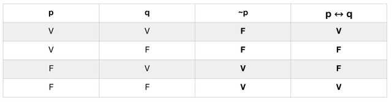
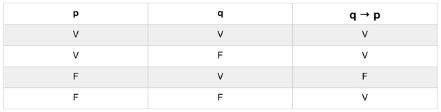
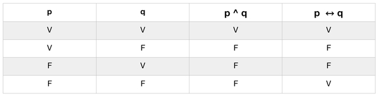
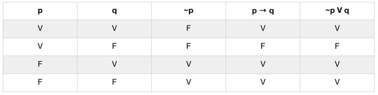
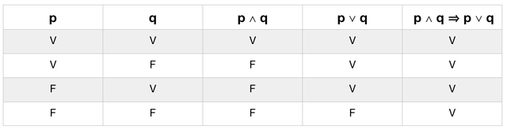
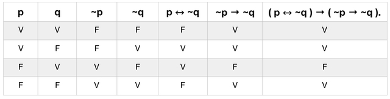
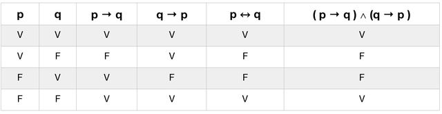

Matemática Discreta
Nessa seção voce irá aprender sobre Lógica Formal e Grafos
Lógica Formal Parte V
Implicação lógica e Equivalência lógica
1. PROPOSIÇÕES INDEPENDENTES E DEPENDENTES
Para uma melhor compreensão do assunto, é necessário entendermos algumas definições introdutórias. Vejamos sobre proposições independentes e dependentes.
Duas proposições são ditas independentes quando, em suas tabelas-verdade, ocorrem todas as quatro alternativas VV, VF, FV e FF. Do contrário, ou seja, quando nas tabelas-verdade de duas proposições não ocorre pelo menos uma das quatro alternativas VV, VF, FV e FF, dizemos que elas são dependentes. Quando duas proposições são dependentes, dizemos ainda que existe uma relação entre elas.
Como podemos ver na tabela-verdade a seguir, as proposições ~ p e p ↔ q são dependentes, pois ocorrem as quatro alternativas: FV na primeira linha, FF na segunda linha, VF na terceira linha e VV na quarta linha.
As proposições p e q → p são dependentes, como pode ser visto de suas tabelas verdades.
É possível perceber que ocorre na VV nas linhas 1 e 2, FV na linha 4 e FF na linha 3, mas não ocorres a alternativa VF. Portanto, existe uma relação entre as proposições p e q → p.
Uma relação entre proposições em que não ocorre exatamente uma das alternativas VV, VF, FV, FF é dita uma relação simples, enquanto que uma relação em que não ocorrem exatamente duas das alternativas é uma relação composta.
2. IMPLICAÇÕES LÓGICAS
Dizemos que uma proposição P implica (ou implica logicamente) uma proposição Q, e representamos P ⇒ Q, quando, em suas tabelas-verdade, quando, em suas tabelas-verdade, não ocorre VF (nessa ordem) numa mesma linha. Outras formas equivalente de dizer que P implica Q (P ⇒ Q) são:
- P ⇒ Q quando Q é verdadeira (V) todas as vezes que P for verdadeira (V).
- P ⇒ Q quando não ocorre P e Q com valores lógicos simultâneos, respectivamente, V e F.
Vejamos o exemplo a seguir, das tabelas-verdade das proposições p ^ q e de p ↔ q. Note que, sempre que p ^ q é verdadeira (V), p ↔ q também é verdadeira:
O teorema (1) seguinte diz que toda proposição implica uma tautologia e somente uma contradição implica uma contradição.
“A proposição P implica a proposição Q, isto é, P ⇒ Q se, e somente se, a condicional P → Q é uma tautologia”.
Portanto, toda implicação corresponde a uma condicional tautológica, e vice-versa. Mediante o Princípio da Substituição, visto anteriormente, uma consequência do Teorema 1 é o seguinte corolário:
"Sejam p1, p2, … pn proposições simples dadas. Se P( p1, p2, … pn ) ⇒ Q( p1, p2, … pn ), então temos também P( p'1, p'2, … p'n ) ⇒ Q( p'1, p'2, … p'n ) quaisquer que sejam as proposições simples ou compostas p'1, p'2, … p'n"
O Corolário garante que, ao substituirmos as proposições simples componentes em uma implicação por outras proposições quaisquer, ainda teremos uma implicação.
Podemos notar facilmente que a relação de implicação goza das seguintes propriedades:
- 1. Reflexiva: P ⇒ P
- 2. Transitiva: Se P ⇒ Q e Q ⇒ R , então P ⇒ R
3. EQUIVALÊNCIAS LÓGICAS
Dizemos que uma proposição P é equivalente (ou logicamente equivalente) a uma proposição Q, e representaremos por P ⇔ Q, quando, em suas tabelas-verdade, não ocorrem VF e nem FV numa mesma linha. Outra forma de dizer que P é equivalente a Q (P ⇔ Q) é:
- P ⇔ Q Quando as tabelas-verdade de P e Q são idênticas.
Vejamos o exemplo a seguir, onde as proposições ~~p e p são equivalentes, desse modo, toda proposição é equivalente à sua dupla negação. De fato, basta verificar que as tabelas-verdade de ~~p e de p são idênticas:

Portanto, simbolicamente, temos ~~p ⇔ p, chamada Regra da Dupla Negação.
Vejamos mais um exemplo, onde as proposições p → q e ~p V q são equivalentes, ou seja, uma condicional é equivalente à disjunção da negação do antecedente com o seu consequente. Simbolicamente, p → q ⇔ ~p V q. Esse fato pode ser comprovado verificando-se que as tabelas-verdade p → q e ~p V q são idênticas.
O teorema (2) seguinte estabelece uma relação entre a equivalência lógica e certa proposição bicondicional.
“A proposição P> equivale à proposição Q, isto é, P ⇔ Q se, e somente se, a bicondicional P ↔ Q for uma tautologia.”
Portanto, toda equivalência corresponde a uma bicondicional tautológica, e vice-versa. Mediante o Princípio da Substituição, visto anteriormente, uma consequência do Teorema 2 é o seguinte corolário:
"Sejam p1, p2, … pn proposições simples dadas. Se P( p1, p2, … pn ) ⇔ Q( p1, p2, … pn ), então temos também P( p'1, p'2, … p'n ) ⇔ Q( p'1, p'2, … p'n ) quaisquer que sejam as proposições simples ou compostas p'1, p'2, … p’n."
Este corolário garante que, ao substituirmos as proposições simples componentes em uma equivalência por outras proposições quaisquer, ainda teremos uma equivalência.
Podemos notar facilmente que a relação de equivalência goza das seguintes propriedades:
- 1. Reflexiva: P ⇔ P
- 2. Simétrica: Se P ⇔ Q , então Q ⇔ P
- 3. Transitiva: Se P ⇔ Q e Q ⇔ R , então P ⇔ R
Exercícios
Agora teste o seu grau de aproveitamento do conteúdo resolvendo os exercícios a seguir
IMPLICAÇÕES E EQUIVALÊNCIAS
1. Utilize a tabela verdade para resolver os exercícios a seguir:
- a) Usando tabela-verdade, prove que p ∧ q ⇒ p ∨ q.
- b) Verifique, usando tabela-verdade, se a proposição p ↔ ¬q implica ou não a proposição ¬p → ¬q.
- c) Usando tabela-verdade, mostre a equivalência p → p ∧ q ⇔ p → q, a qual é chamada Regra de Absorção.
- d) Verifique, usando tabela-verdade, que a proposição p ↔ q é equivalente à conjunção das duas condicionais p → q e q → p , ou seja, mostre que p ↔ q e ( p → q ) ∧ (q → p ) são equivalentes
Gabarito
Confira suas respostas
- a) Vamos construir a tabela-verdade da condicional p ∧ q → p ∨ q
- b) Vamos construir a tabela-verdade da condicional ( p ↔ ~q ) → ( ~p → ~q ).
- c) Vamos construir a tabela-verdade da bicondicional p → p ∧ q ↔ p → q.
- d) Vamos construir as tabelas-verdade das proposições p ↔ q e ( p → q ) ∧ (q → p ).

Portanto, a condicional p ∧ q → p ∨ q é tautológica, pois, na coluna de saída de sua tabela-verdade, ocorre somente o valor lógico V. Logo, a proposição p ∧ q implica p ∨ q ou, simbolicamente, p ∧ q ⇒ p ∨ q .

Portanto, a condicional ( p ↔ ¬q ) → (~p → ~q ) não é tautológica, pois, na coluna de saída de sua tabela-verdade, ocorre o valor lógico F. Logo, a proposição p ↔ ~q não implica ~p → ~q.

Portanto, a bicondicional p → p ∧ q ↔ p → q é tautológica, pois, na coluna de saída de sua tabela-verdade, ocorre somente o valor lógico V. Logo, as proposições p → p ∧ q e p → q são equivalentes, ou seja, ocorre p → p ∧ q ⇔ p → q.

Portanto, as tabelas-verdade de p ↔ q e ( p → q ) ∧ (q → p ) são idênticas. Logo, as proposições p ↔ q e ( p → q ) ∧ (q → p ) são equivalentes ou, simbolicamente, p ↔ q ⇔ ( p → q) ∧ (q → p) .